Learn: vocabulary
Twelve picture sets, including numbers, colors, fruits, vegetables, animals, the face and body, household and kitchen items, professions, and everyday actions. Tap any card to hear the Portuguese word.
Santa Clara University · Senior Design & Computing for Social Impact · 2024–2026
A language-empowerment app that teaches Portuguese to mothers in Mecúfi, Mozambique, who can't read or write in any language. It works through pictures and sound, runs offline on shared tablets, and comes with a web app so moderators can update the lessons themselves.
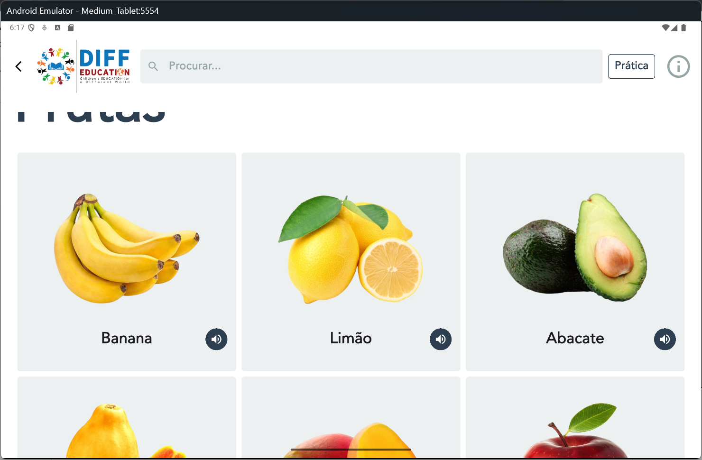
DIFF EDUCATION runs a school in Mecúfi, a district of about 61,000 people in northern Mozambique. The mothers of its students mostly speak Makhuwa. They have had little or no formal schooling, can't read or write in any language, and have rarely used a phone or tablet.
Portuguese is Mozambique's official language, a legacy of colonization, and it is spoken mainly by younger, formally educated city residents. Learning it would let these mothers sell their produce in nearby city markets, deal with clinics and offices, and support their children's schooling. The idea for the app came from the community itself.
Nearly every language-learning app assumes you can already read, and asks you to pick a language you know to learn from. These users can do neither. Internet access is also unreliable and is often cut by storms or political unrest.
The plan: groups of about 15 mothers practice at the school for 30–45 minutes after 5:30 p.m., two or three times a week, on shared tablets with a Portuguese- and Makhuwa-speaking moderator.
Part 1 · Senior design, 2024–25
A landscape Flutter app for low-cost Android tablets, with two modes: Aprender (Learn) and Prática (Practice). It targets beginner level (CEFR A1): greetings, introductions, and everyday vocabulary.
Twelve picture sets, including numbers, colors, fruits, vegetables, animals, the face and body, household and kitchen items, professions, and everyday actions. Tap any card to hear the Portuguese word.
Greetings and Requests: the same question answered two ways, once informally and once formally, with audio for every line.
Colors, Face and Body. The learner sees new pictures (not the ones from Learn), hears the question, and picks one of three spoken answers. Wrong options are deliberately obvious.
Greetings, shopping at a store, and personal introductions. Each line appears only after the previous one has been played, and there are back, next and start-over buttons.
Annotated screens from our May 2025 Senior Design Conference presentation.
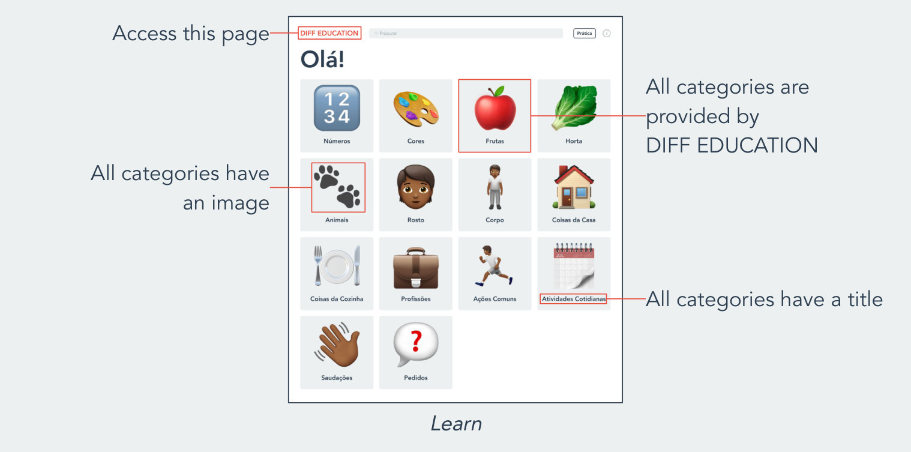
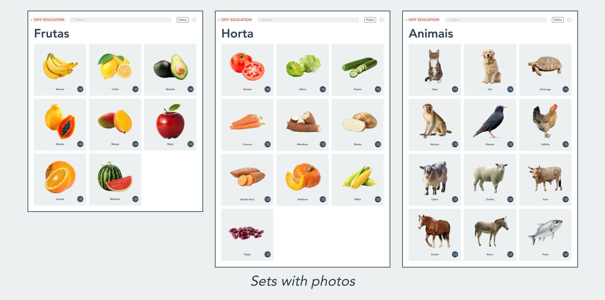
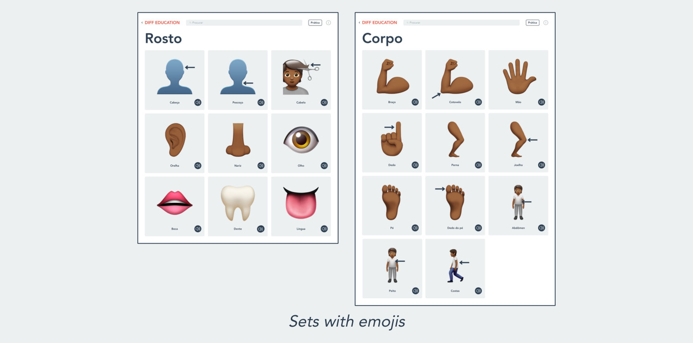
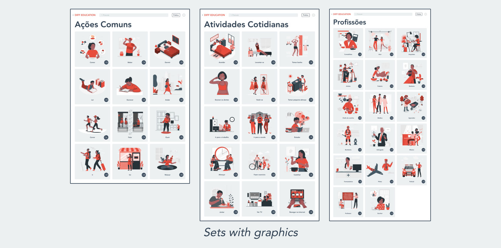
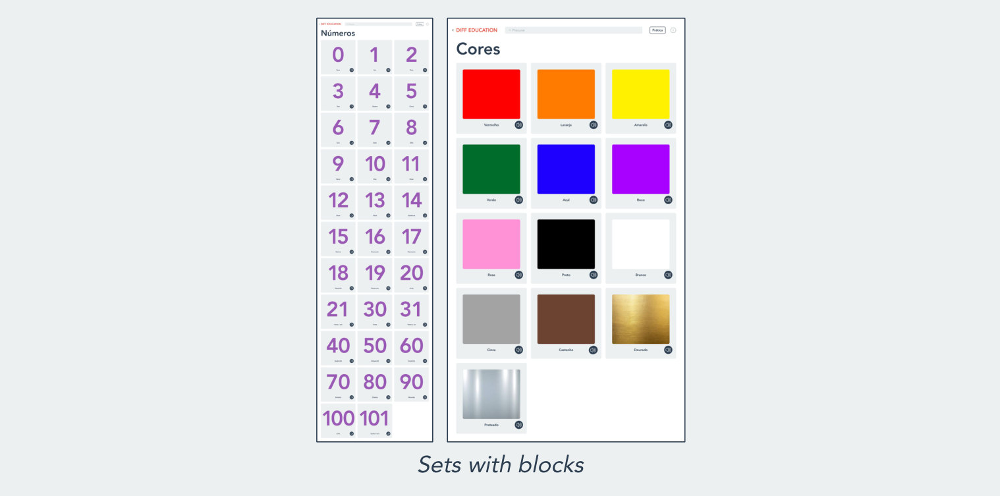
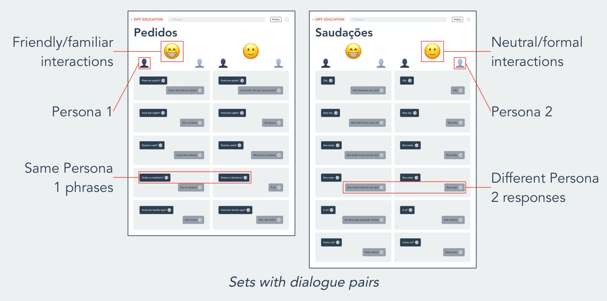
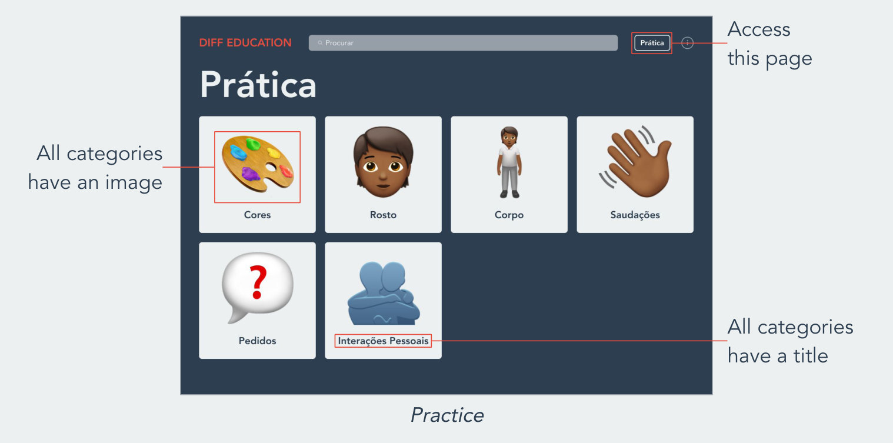
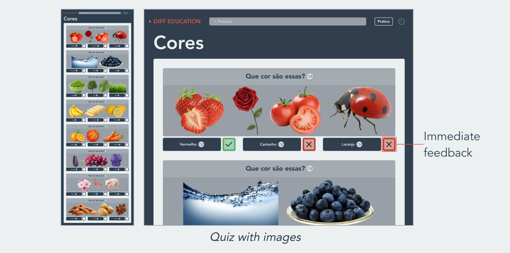
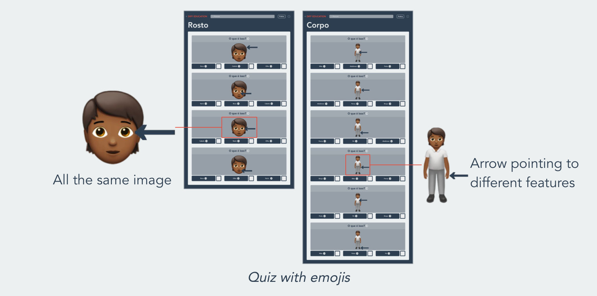
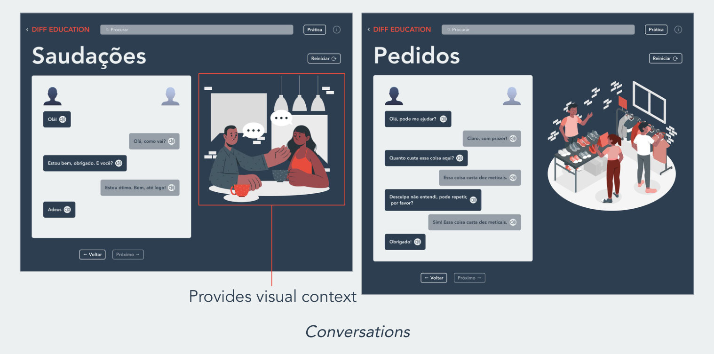
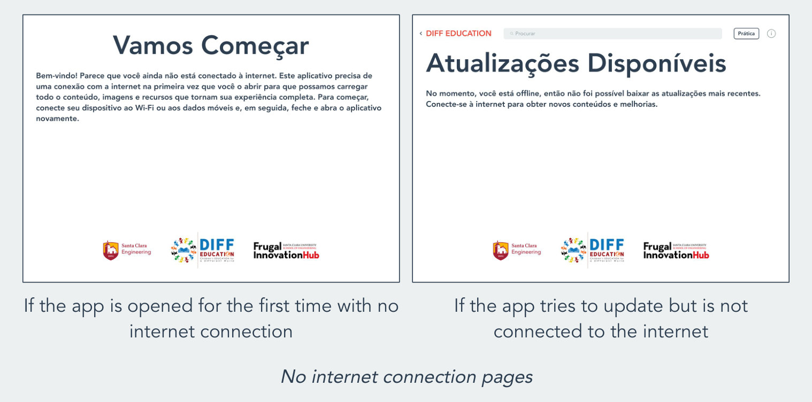
On first launch the app downloads everything from Cloud Firestore and Firebase Storage
into a local Hive database, with a progress dialog showing each of its five
sync steps. After that, everything runs from the tablet's storage. A connection is only needed when a
moderator taps Update/Sync, and separate screens explain when there's no internet on first
launch or during an update. We picked Hive over SQLite and bundled JSON because it's written in
Dart, reads faster, and is NoSQL like Firestore. The app follows MVVM
(model → repositories → services → view_model → view).
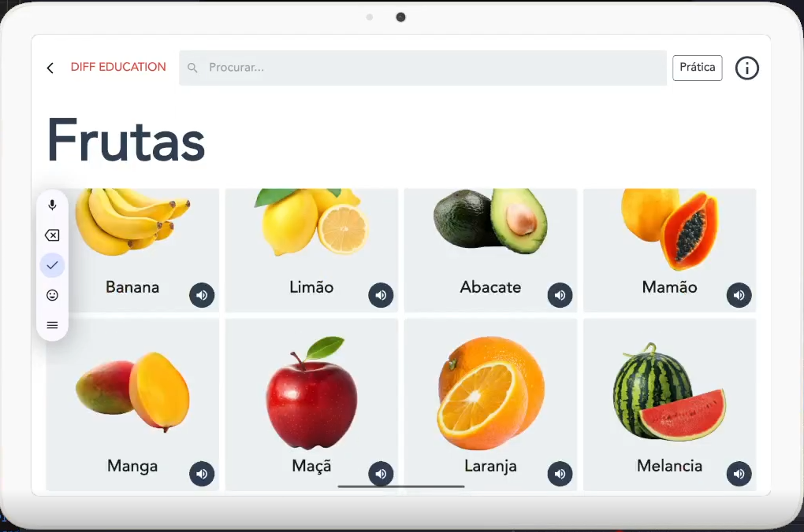
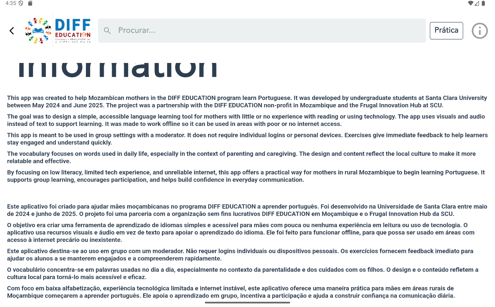
Part 2 · CSEN 493, 2025–26
After senior design, adding a single word meant editing a spreadsheet, running Node scripts, generating audio by hand, and redeploying a Firebase site. Only a developer could do that. In CSEN 493 (Computing Project for Social Impact), Alex Lopes and I built a web portal so DIFF EDUCATION can manage content without us.
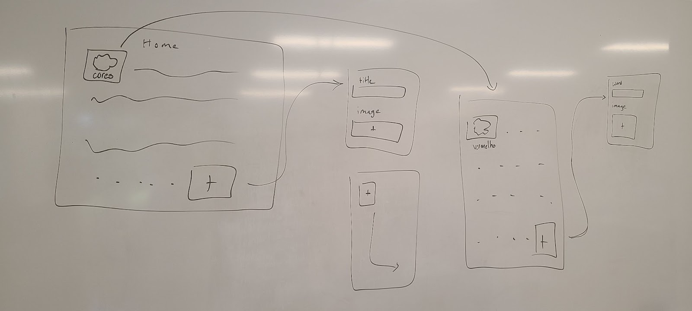
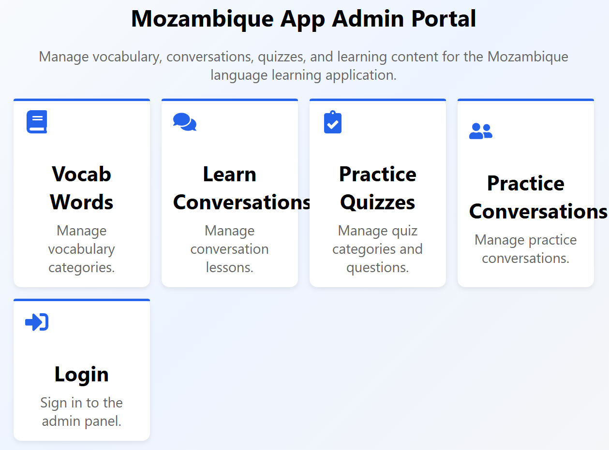
Moderators can add, edit, reorder and delete vocabulary categories and words. Quiz questions and practice conversations use the same structure.
A moderator types a Portuguese word. The backend calls the ttsMP3 text-to-speech API, downloads the MP3 and saves it to Firebase Storage, so the API key never reaches the browser.
Built with dnd-kit. Cards can only be dragged by a handle, which prevents accidental reordering.
Delete buttons appear only on a word's edit page, and every delete asks for confirmation first.
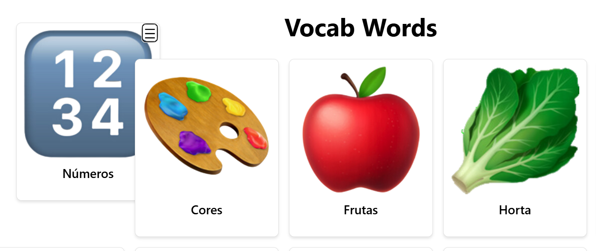
Firebase is the single source of truth for both apps. The biggest change between the two years was who could update content.
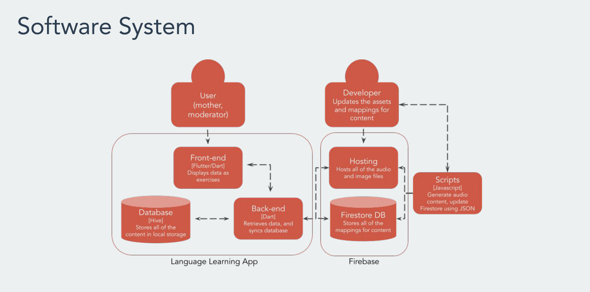
The tablet app only reads. Every write goes through the authenticated web app.
We compared React Native and Flutter. We chose Flutter because our advisor's future student teams use it, which makes the project easier to hand off, and because hot reload and built-in widgets fit a one-year timeline. DIFF EDUCATION chose Android because the devices are cheaper and easier to get in Mozambique. Firebase had a free tier and works well with Flutter.
During senior design, images and audio were committed to the repo and served from Firebase Hosting. That worked for a demo, but moderators can't upload new files that way. We moved everything to Cloud Storage, which accepts uploads from both the browser and Flutter. We hesitated at first because Storage requires the pay-as-you-go Blaze plan. A worst-case estimate of 1,000 images at 1 MB plus 1,000 clips at 40 KB comes to about 1.04 GB, well under the 5 GB free tier.
Originally, every category lived in an array inside a single Firestore document. Editing or reordering one item meant rewriting the whole document, and Firestore documents have a 1 MB limit. We moved to one document per category, with each category's words in its own subcollection. Reads now fetch only what they need, and the content can grow without limit.
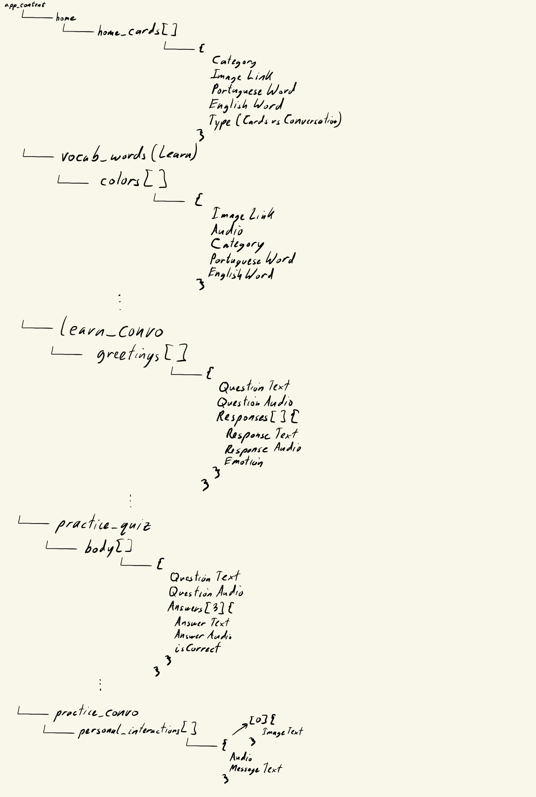
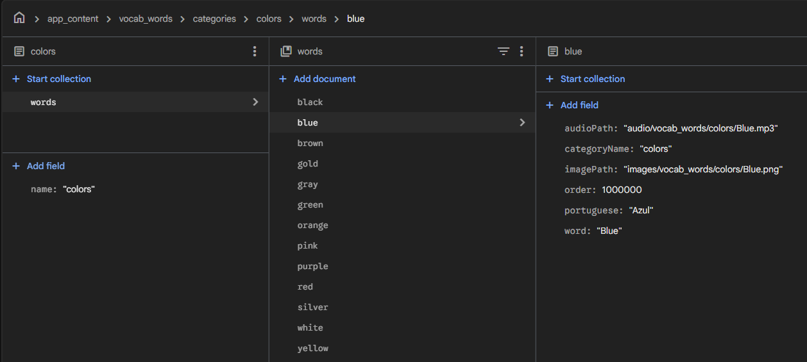
order field.
Arrays come with an order built in. Subcollections don't, so each document has an integer
order field. New items are spaced 1,000,000 apart, and a dragged
item gets the midpoint between its new neighbors. This is fractional indexing, the
same technique Figma uses, and it means a move updates one document instead of renumbering the whole list.
With Firestore's 263−1 integer limit, it would take more than 9 trillion items to overflow.
Only moderators may change content. The front end signs in with Firebase Authentication
and sends an ID token with every write, which the Express middleware verifies before
touching Firestore. Firebase Auth doesn't support plain usernames, so the app quietly maps
each one to an internal address (bbronco → bbronco@mozambique-app.local).
Images upload directly from the authenticated browser to Storage, which is fast and avoids a second hop through the server. Audio is generated and uploaded by the backend because it requires the secret ttsMP3 key. Edits rename or overwrite existing records instead of deleting and recreating them, unless a new file is involved.
The same Firestore project holds dev_content and app_content.
Release builds select one at compile time (--dart-define=FIRESTORE_COLLECTION_NAME),
so we can keep editing content without disrupting the tablets used in field testing.
Spring 2026
The Frugal Innovation Hub planned a three-stage rollout. Teachers would test first, then a few mothers the teachers picked, then everyone. In spring 2026 the app was installed on the school's tablets in Mecúfi and tested there.
"The women understood right away."
Field-test notes, DIFF EDUCATION teacher in Mozambique
"They really appreciated the app, and it works really well… As you can see, the outcome is amazing."
DIFF EDUCATION, April 2026
"We will really create a huge difference in the community."
DIFF EDUCATION, April 2026
We began meeting with DIFF EDUCATION and the Frugal Innovation Hub. We chose Flutter over React Native and MVVM over MVC, and Sara Wheeler designed the app in Figma. DIFF EDUCATION's doctor reviewed every vocabulary set and image. Post-election unrest and internet shutdowns in Mozambique (October–November) and Cyclone Chido (December) repeatedly cut off contact with our partners. This reinforced the decision to build offline-first.
We split the work and built for Android tablets in landscape. Gwen Patwardhan and I owned the database. We chose Hive for offline storage with Firestore for remote updates. Recorded demos tracked progress: Learn cards, audio, search, syncing, and the sync progress dialog. We finished with the thesis, a 35-minute final presentation and live demo, and the first release build in May.
Alex Lopes and I continued the project in CSEN 493. The Frugal Innovation Hub tested a build on its own Android tablet, which led to v1.0.1 with the logo header and a title that scrolls away. While our partners were unavailable, we started the web app so moderators wouldn't depend on developers.
We chose React and Express. I built the backend endpoints, and Alex started the front-end templates. We moved media to Cloud Storage (v1.1.0) and remodeled Firestore with subcollections (v1.2.0).
Vocabulary editing in the web app was finished. On February 4 we demoed both apps in person to DIFF EDUCATION, including a live edit in the web app that appeared on the tablet after a sync. We added the launcher icon (v1.2.1), separated development and production content (v1.2.2), and shipped the Portuguese Information screen (v1.2.3).
The app was installed on tablets at the school in Mecúfi and tested there. We turned the feedback into a list of new content. We documented the project to hand the Firebase project and both repositories to the next Frugal Innovation Hub team.
Portuguese for Mozambican Mothers – A Language Empowerment App
Computer Science and Engineering Senior Thesis 330 · Santa Clara University · 2025
The thesis covers the problem, related work, and the teaching approaches behind the app (the Direct Method, Community Language Learning, and the Communicative Approach). It also covers requirements and use cases, the UI and system design, testing, and the app's ethical, social and sustainability considerations.
Recommended citation
Kindarara, Josh; Lopes, Alexandre; Patwardhan, Gwendolyn; Santos, Riana; and Wheeler, Sara, "Portuguese for Mozambican Mothers – A Language Empowerment App" (2025). Computer Science and Engineering Senior Theses. 330. https://scholarcommons.scu.edu/cseng_senior/330
Thank you to DIFF EDUCATION, its teachers, moderators and families in Mecúfi, and to Santa Clara University's Frugal Innovation Hub.
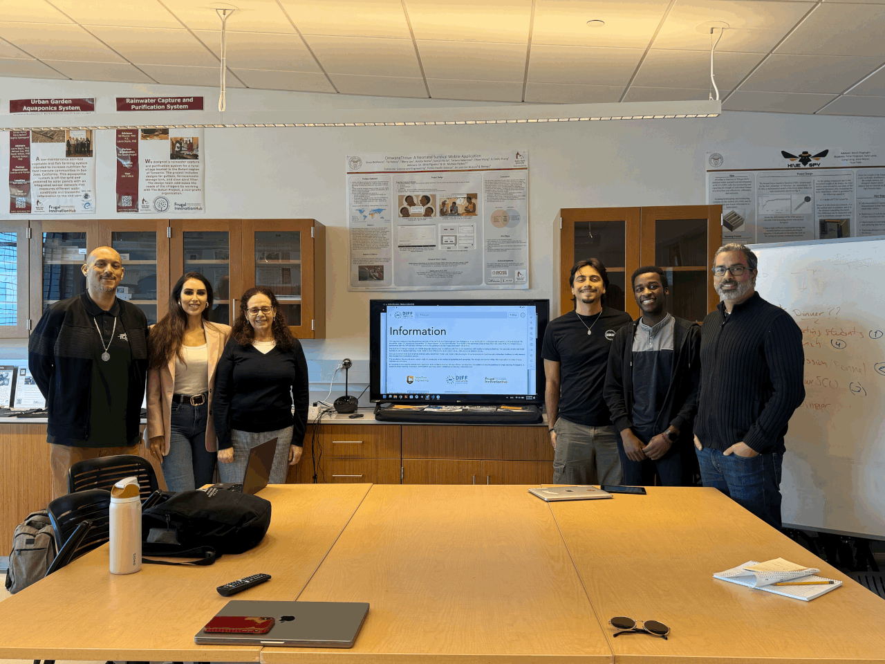